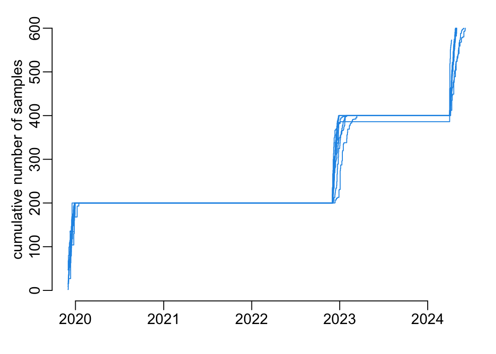

if (grepl("arc|hoisy", Sys.getenv("USER"))) {
path2data <- paste0("~/Library/CloudStorage/OneDrive-OxfordUniversityClinical",
"ResearchUnit/GitHub/choisy/measles serology/")
}Measles serology
1 Contants
The path to the data folder:
2 Packages
Required packages:
required <- c("sf", "readxl", "stringr", "purrr", "tidyr", "magrittr", "dplyr",
"lubridate")Installing those that are not installed yet:
to_install <- required[! required %in% installed.packages()[,"Package"]]
if (length(to_install)) install.packages(to_install)Loading the packages for interactive use:
invisible(sapply(required, library, character.only = TRUE))3 Functions
A function that generates names of a vector of character strings from its content:
set_names2 <- function(x) {
setNames(x, x |>
str_remove("^.*_") |>
str_remove("^.*-") |>
str_remove(".xlsx$"))
}A tuning of the text() function:
text2 <- function(x, y, labels, cex = 1,
bg = "white", padx = 10, pady = .1, ...) {
w <- strwidth(labels, cex = cex)
h <- strheight(labels, cex = cex)
rect(x - w / 2 - padx, y - h / 2 - pady / 2, x + w / 2 + padx, y + h / 2 + pady / 2,
col = bg, border = NA)
text(x, y, labels, cex = cex, ...)
}Tuning of the rgb() function:
rgb2 <- function(...) rgb(..., maxColorValue = 255)A tuning of the pie() function:
pie2 <- function(x, ...) {
if (all(x == 0)) {
plot(1, ann = FALSE, axes = FALSE, type = "n")
} else {
pie(x, ...)
}
}4 Loading data
Loading all the excel files of the data folder:
the3files <- path2data |>
list.files(full.names = TRUE) |>
grep("gadm", x = _, value = TRUE, invert = TRUE) |>
set_names2() |>
map(read_excel, "Marc", col_types = "text")A function that recode sex:
recode_sex <- function(x) {
sex_val <- sort(unique(x$sex))
males <- grep("^M|na", sex_val, TRUE, value = TRUE)
females <- grep("^M|na", sex_val, TRUE, value = TRUE, invert = TRUE)
mutate(x, across(sex, ~ recode_values(.x, males ~ "male", females ~ "female")))
}A piece of code common to all the collections:
common_data_processing <- function(x) {
x |>
filter(!if_all(everything(), is.na)) |>
recode_sex() |>
separate_wider_delim(ID, regex("\\s+"), names = c("sID", "cdate", "plate")) |>
mutate(across(titer, as.double))
}Combining the last two collections:
last2collections <- the3files |>
extract(c("Dec2022", "Apr24")) |>
map(select, -date_collection) |>
bind_rows() |>
common_data_processing() |>
mutate(collection_date = ymd(paste(year_collection, month_collection, day_collection,
sep = "-"))) |>
select(participant, province, hospital, site, collection, sample_ID, age_group, age,
sex, collection_date, plate, titer, conclusion)Now to the first collection:
first_collection <- the3files$DEC2019 |>
common_data_processing() |>
mutate(date_chr = if_else( grepl("[./]", date_collection), date_collection, NA),
date_num = if_else(!grepl("[./]", date_collection), date_collection, NA),
across(date_num, ~ .x |> as.numeric() |> as_date("1899-12-30")),
across(date_chr, dmy),
collection_date = coalesce(date_num, date_chr)) |>
select(participant, hospital, collection, sample_ID, age_group, age, sex,
collection_date, plate, titer, conclusion)The total collection:
dataset <- last2collections |>
bind_rows(first_collection) |>
mutate(province = ifelse(is.na(province), hospital, province),
across(province, ~ recode_values(.x, "AG" ~ "An Giang",
"BD" ~ "Binh Dinh",
"DL" ~ "Dak Lak",
"DT" ~ "Dong Thap",
"HC" ~ "HCMC",
"HU" ~ "Hue",
"KG" ~ "Kien Giang",
"KH" ~ "Khanh Hoa",
"QN" ~ "Quang Ngai",
"ST" ~ "Soc Trang",
"Daklak" ~ "Dak Lak",
"HUE" ~ "Hue",
"HCM" ~ "HCMC", default = .x)),
year = year(collection_date),
time_point = recode_values(year, 2019:2020 ~ "T1",
2022:2023 ~ "T2", default = "T3"),
across(age, ~ ifelse(participant == "0158" & province == "Dak Lak" &
collection == "42", "48", .x)),
age_unit = str_remove_all(age, "\\d"),
age2 = as.numeric(str_remove_all(age, "\\D")),
age3 = as.numeric(age),
age4 = ifelse(is.na(age3), ifelse(age_unit %in% c("M", "th"), age2 / 12,
ifelse(age_unit == "ng", age2 / 365, age2)),
age3),
age = ifelse(age4 > 100, year - age4, age4),
age_group = cut(age, c(0:20, seq(25, 70, 5), 100), right = FALSE)) |>
select(-c(year, age_unit, age2, age3, age4, hospital)) |>
arrange(time_point, province, age_group, collection_date)A hash table to generate site ID from province names:
hash <- dataset |>
filter_out(time_point == "T1") |>
filter(age > 20) |>
select(province, site) |>
unique() |>
with(setNames(site, province))Completing the site ID:
dataset <- mutate(dataset, across(site, ~ ifelse(is.na(.x), hash[province], .x)))Which gives:
dataset# A tibble: 5,573 × 13
participant province site collection sample_ID age_group age sex
<chr> <chr> <chr> <chr> <chr> <fct> <dbl> <chr>
1 0033 An Giang 119 42 AG420033 [9,10) 9 female
2 0060 An Giang 119 42 AG420060 [9,10) 9 female
3 0016 An Giang 119 42 AG420016 [14,15) 14 male
4 0036 An Giang 119 42 AG420036 [14,15) 14 female
5 0040 An Giang 119 42 AG420040 [14,15) 14 female
6 0022 An Giang 119 42 AG420022 [15,16) 15 female
7 0037 An Giang 119 42 AG420037 [15,16) 15 female
8 0042 An Giang 119 42 AG420042 [15,16) 15 male
9 0009 An Giang 119 42 AG420009 [16,17) 16 female
10 0013 An Giang 119 42 AG420013 [16,17) 16 female
# ℹ 5,563 more rows
# ℹ 5 more variables: collection_date <date>, plate <chr>, titer <dbl>,
# conclusion <chr>, time_point <chr>5 Sampling locations
Loading the sf object of the provinces of Vietnam:
gadm1 <- readRDS(paste0(path2data, "gadm36_VNM_1_sf.rds"))
st_crs(gadm1) <- st_crs(gadm1)old-style crs object detected; please recreate object with a recent sf::st_crs()
old-style crs object detected; please recreate object with a recent sf::st_crs()Plotting the provinces from which samples where collected:
sel <- dataset |>
pull(province) |>
unique() |>
str_replace("Hue", "Thua Thien Hue") |>
str_replace("HCMC", "Ho Chi Minh")
opar <- par(plt = rep(0:1, 2))
gadm1 |>
st_geometry() |>
plot(col = "lightyellow")
gadm1 |>
filter(VARNAME_1 %in% setdiff(sel, "Kien Giang")) |>
st_geometry() |>
plot(add = TRUE, col = 2)
gadm1 |>
filter(VARNAME_1 == "Kien Giang") |>
st_geometry() |>
plot(add = TRUE, col = 7)
par(opar)
6 Overview of the data
Number of sample per site per time point:
with(dataset, table(province, time_point)) time_point
province T1 T2 T3
An Giang 200 200 200
Binh Dinh 200 200 200
Dak Lak 200 200 200
Dong Thap 200 200 200
HCMC 200 186 187
Hue 200 200 200
Khanh Hoa 200 200 200
Kien Giang 200 0 0
Quang Ngai 200 200 200
Soc Trang 200 200 200A tuning of the barplot() function:
barplot2 <- function(x, ...) {
n1 <- 5; n2 <- 10; ad <- 20
with(x, {
barplot(Freq, space = 0, col = 4, ...)
mtext(province[1], line = -.5)
})
segments( 0, n1, ad, n1, col = 2, lwd = 4)
segments(ad, n2, 31, n2, col = 2, lwd = 4)
}Number of sample per age class, per province, per time point:
tmp <- dataset |>
with(table(age_group, province, time_point)) |>
as.data.frame()
ylim <- c(0, max(tmp$Freq))
opar <- par(mfcol = c(10, 3), plt = c(.105, .97, .1, .9))
tmp |>
group_by(time_point, province) |>
group_split() |>
walk(~ barplot2(.x, ylim = ylim))
par(opar)
Number of sample per day and site:
hz_lines <- 1:10
dataset |>
group_by(province, collection_date) |>
tally() |>
ungroup() |>
mutate(y = max(hz_lines) + 1 - as.numeric(as.factor(province))) |>
with(plot(collection_date, y, cex = sqrt(n), ann = FALSE, axes = FALSE, col = 4,
xpd = TRUE))
lb <- 2020:2024
axis(1, ymd(paste(lb, "0101")), lb)
abline(h = hz_lines, col = "grey")
text2(rep(ymd(20210701), length(hz_lines)), rev(hz_lines), unique(dataset$province))
An alternative representation:
plot(NA, xlim = range(dataset$collection_date), ylim = c(0, 600), axes = FALSE,
xlab = NA, ylab = "cumulative number of samples")
axis(1, ymd(paste(lb, "0101")), lb); axis(2)
dataset |>
group_by(province, collection_date) |>
tally() |>
group_modify(~ mutate(.x, cumn = cumsum(n))) |>
group_walk(~ with(.x, lines(collection_date, cumn, type = "s", col = 4)))
Yet another representation:
dataset |>
group_by(collection_date) |>
tally() |>
with(plot(collection_date, n, type = "h", col = "4", xlab = NA,
ylab = "sampling intensity (/day)"))
Gender distribution:
opar <- par(mfcol = c(10, 3), plt = c(.05, .95, .01, .91))
dataset |>
with(table(sex, province, time_point)) |>
as.data.frame() |>
group_by(time_point, province) |>
group_split() |>
walk(~ with(.x, {
pie2(Freq, NA, col = c(rgb2(247, 114, 184), rgb2(62, 146, 247)))
mtext(province[1], line = -.5)
}))
par(opar)